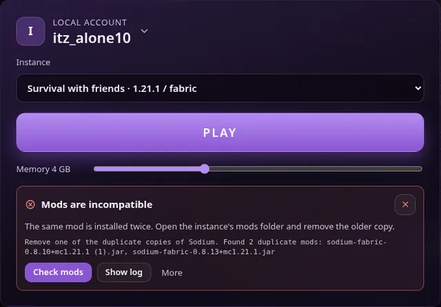
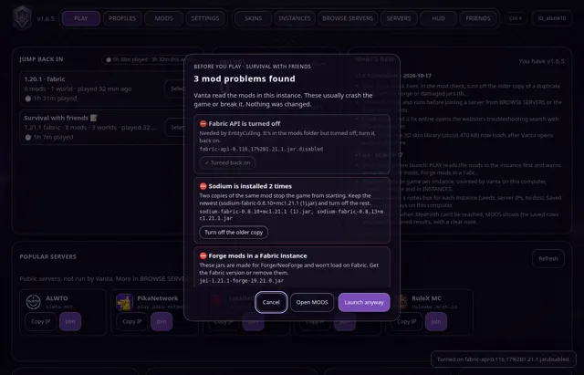

News · · v1.6.6
Vanta 1.6.6: check mods from the crash card
After a crash, one button checks the mods of the instance that crashed. Turned-off mods can be turned back on, Home shows playtime this week, and the crash helper knows four more crashes.
Vanta 1.6.6 is out for Windows and macOS. Press Update in Vanta's top bar to get it.
Check mods after a crash
The crash card on PLAY has a new Check mods button. It runs the mod check on the instance that crashed, with the same one-click fixes as before PLAY.

Turn a needed mod back on
If a mod needs another one (for example Fabric API) that is in the mods folder but turned off, the mod check now offers Turn it back on instead of a download. When the same mod is there twice with the same version, Vanta keeps the original and turns off the browser copy such as mod (1).jar.

Playtime this week
Home shows your playtime this week next to the total, and a 📝 icon on instances that have notes. INSTANCES has a Reset playtime button for one instance; it asks first and doesn't touch worlds or mods.
Four more known crashes
The crash helper now explains damaged game or mod files, an incomplete Minecraft install, “access denied” (antivirus or permissions) and a network port that is already in use. The troubleshooting search has the same four.